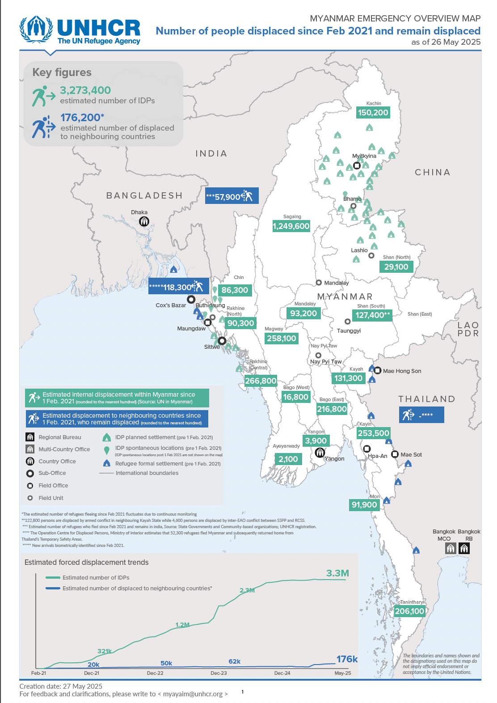

This infographic map documents internal displacement across Myanmar between February 2021 and May 27, 2025. It visualizes the scale and geographic distribution of displacement following the military coup and the spread of conflict across multiple regions.
Within this archive, the map connects personal stories found in letters and interviews to the broader national reality of mass displacement.

Method: metadata / map / infographic analysis
This artifact (A10_map_displacement_map_raw.pdf) was processed through the map and infographic metadata pipeline, including page-level analysis outputs for A10_map_displacement_map_raw_page1.png and A10_map_displacement_map_raw_page2.png.
See consolidated results in the AI Analysis section.
It links individual testimony to the larger scale of the crisis.